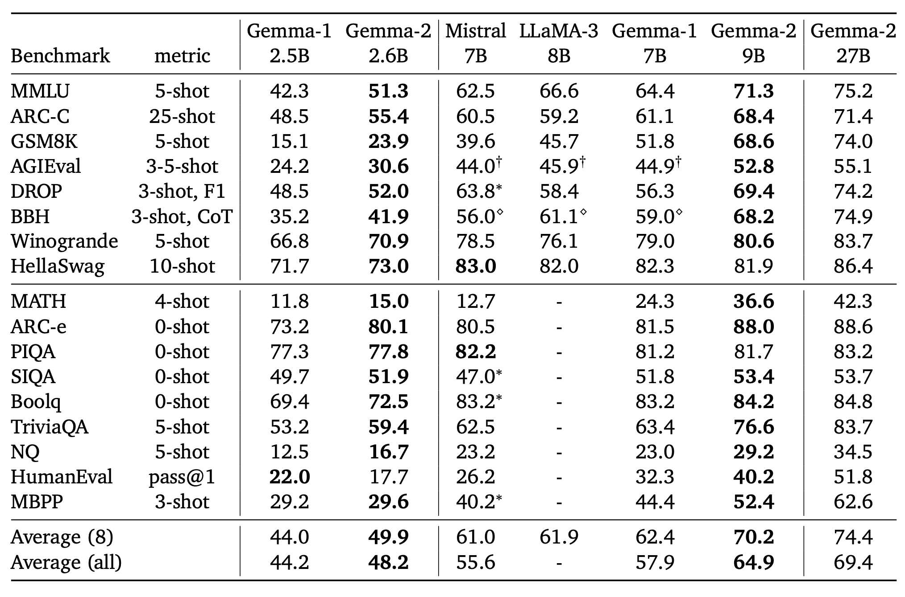
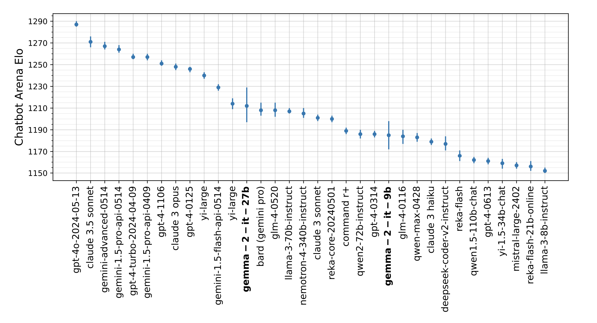
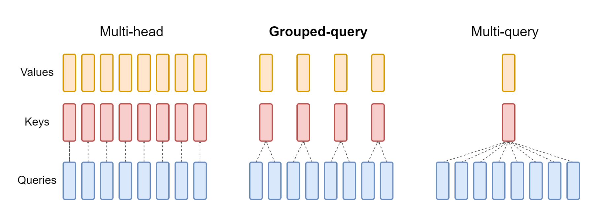

import torch
import torch.nn as nn
from dataclasses import dataclass
from typing import Optional
import math
import torch.nn.functional as F1 Introduction
I am sure by now you would have seen Gemma 2’s announcement or played around with the model. If you haven’t yet, I highly recommend that you do.

Going by the benchmarks shared in the official Gemma 2 report, the model is extremely competitive and outperforming other models relative to it’s size.

Also, as can be seen in Figure 2, the results from Chatbot arena for Gemma 2 models look pretty impressive, given the model sizes.
Below, I try to summarise “Why is Gemma 2 such a big deal?”:
- The model comes in practical sizes 3B, 9B & 27B that can fit on a single GPU (at the time of writing this blog post, the 3B version is yet to be released)
- Performance of the Gemma 2 models is on par with models twice or more it’s size!
- Model weights are open-source - thank you Google Deepmind!
As part of this blog post, we will be going deeper into some of the architectural components of Gemma 2 along with their implementation in PyTorch. Specifically we will be looking into:
- Grouped Query Attention (Section 3)
- Sliding Window Attention (Section 4)
- Rotary Position Embeddings (RoPE) (Section 5)
- Logit soft-capping (Section 6)
- Model merging (Section 7)
Gentle introduction to Gemma 2
For a more gentle introduction, I would like to refer the readers to Welcome Gemma 2 - Google’s new open LLM by Huggingface.
2 Gemma 2 Report
In this section, we look into the architecture details as shared in the report - Gemma 2: Improving Open Language Models at a Practical Size.
From the report:
In this work, we introduce Gemma 2, a new addition to the Gemma family of lightweight, state-of-the-art open models, ranging in scale from 2 billion to 27 billion parameters. The 9 billion and 27 billion parameter models are available today, with a 2 billion parameter model to be released shortly. In this new version, we provide several technical modifications to our architecture, such as interleaving local-global attentions (Beltagy, Peters, and Cohan (2020)) and group-query attention (Ainslie et al. (2023)). We also train the 2B and 9B models with knowledge distillation (Hinton et al., 2015) instead of next token prediction. The resulting models deliver the best performance for their size, and even offer competitive alternatives to models that are 2-3× bigger.
Note
I guess the key point that me hooked to Gemma 2 was the last line shared in the abstract:
The resulting models deliver the best performance for their size, and even offer competitive alternatives to models that are 2-3× bigger.
This is pretty big news, and very important for the projects that I have been recently working on. Smaller models in productions means - lower latency, lower memory requirements, faster runtime, thus, an overall reduction in computing costs.
The recent large language models AI@Meta (2024), have been known to have dataset sizes as big as 15T tokens! It is the longer training on bigger datasets that has been key towards LLMs having continued improvements in performance. The models are trained to predict the next tokens in a left-to-right manner.
AI@Meta. 2024. “Llama 3 Model Card.” https://github.com/meta-llama/llama3/blob/main/MODEL_CARD.md.
In Gemma 2, the authors trained the smaller 2.6B and 9B models using knowledge distillation. This, alongside other architecture details, has allowed Gemma 2 to have the best in class performance given it’s size. Let’s look into each one of the components in the following sections.
3 Group Query Attention
Grouped query attention was introduced by Ainslie et al. (2023) in 2023. The key difference as compared to the standard Multi-headed attention has been highlighted in Figure 3.
Ainslie, Joshua, James Lee-Thorp, Michiel de Jong, Yury Zemlyanskiy, Federico Lebrón, and Sumit Sanghai. 2023. “GQA: Training Generalized Multi-Query Transformer Models from Multi-Head Checkpoints.” https://arxiv.org/abs/2305.13245.
In this part of the blog post, we understand more about Group Query Attention and implement in in PyTorch code from scratch.
For an introduction and in-depth understand to multi-head attention, I would like to refer the reader to my previous blog post on Vision Transformer where we implement attention from scratch in PyTorch in Section 8.

From the Attention is all you need paper, attention mechanism was introduced using the formula:
\[ \text{Attention}(Q, K, V) = \text{softmax}\left(\frac{QK^T}{\sqrt{d_k}}\right)V \]
In Grouped Query Attention, we reduce the number of key and value heads (thus, in a way, grouping heads together as shown in Figure 3). If the number of keys & value heads is reduced to 1, it is equivalent to Multi-Query Attention Shazeer (2019).
Shazeer, Noam. 2019. “Fast Transformer Decoding: One Write-Head Is All You Need.” https://arxiv.org/abs/1911.02150.
Thus, Group Query Attention (GQA) is somewhere in the middle between MHA & MQA. Let’s now implement it in PyTorch.
GQA implementation in PyTorch
We modify the implementation from Meta’s Llama-3 repo here. Basically, we removed rotary embeddings, KV caching, and model parallelization to keep the implementation to a bare minimum.
Having made the imports, let’s define the model arguments. We assume that the input and output dimensions inside the Decoder layer are \(4096\).
Below, the n_kv_heads defines the number of key & value heads. If the number is equal to 1, the below Attention implementation follows Multi-Query Attention. When the number is greater than 1 and less than n_heads, then we follow Group Query Attention as in Figure 3.
@dataclass
class ModelArgs:
dim: int = 4096
n_layers: int = 32
n_heads: int = 32
n_kv_heads: Optional[int] = 8
vocab_size: int = -1 # defined later by tokenizer
multiple_of: int = 256 # make SwiGLU hidden layer size multiple of large power of 2
ffn_dim_multiplier: Optional[float] = None
norm_eps: float = 1e-5
max_batch_size: int = 32
max_seq_len: int = 2048For our implementation, we assume 8 key & value heads whereas 32 query heads.
args = ModelArgs()
argsModelArgs(dim=4096, n_layers=32, n_heads=32, n_kv_heads=8, vocab_size=-1, multiple_of=256, ffn_dim_multiplier=None, norm_eps=1e-05, max_batch_size=32, max_seq_len=2048)Below, follows a standard implementation of Attention (without positional embeddings to keep it simple). We have our weight matrices for q,k & v layers defined as Linear layers. These weight matrices transform an input tensor \(X\) to query \(q\), key \(k\) & value \(v\) respectively.
Taking in an input of shape \((2, 32, 4096)\) which represents a batch of 2 sequences of length 32, each represented by a 4096 long vector.
Upon taking the transform, given the weight matrices self.wq, self.wk & self.wv, the dimensions for our \(q\), \(k\) & \(v\) matrices will be:
\(q\) \(->\) \((2, 32, 4096)\)
\(k\) \(->\) \((2, 32, 1024)\)
\(v\) \(->\) \((2, 32, 1024)\)
Time to take a break and “think” 💭
This would be a great time for you to take a break and think about the dimensions. Can you reason in your head as to why \(k\) and \(v\) are of dimensions \((2,32,1024)\)?
Hint: We have fewer number of k,v heads by an order of magnitude of “4”.
class Attention(nn.Module):
def __init__(self, args: ModelArgs):
super().__init__()
self.n_kv_heads = args.n_heads if args.n_kv_heads is None else args.n_kv_heads
self.n_local_heads = args.n_heads
self.n_local_kv_heads = self.n_kv_heads
self.n_rep = self.n_local_heads // self.n_local_kv_heads
self.head_dim = args.dim // args.n_heads
self.wq = nn.Linear(args.dim, args.n_heads * self.head_dim, bias=False,)
self.wk = nn.Linear(args.dim, args.n_kv_heads * self.head_dim, bias=False,)
self.wv = nn.Linear(args.dim, args.n_kv_heads * self.head_dim, bias=False,)
self.wo = nn.Linear(args.n_heads * self.head_dim, args.dim, bias=False,)
def forward(
self,
x: torch.Tensor,
):
bsz, seqlen, _ = x.shape
xq, xk, xv = self.wq(x), self.wk(x), self.wv(x)
xq = xq.view(bsz, seqlen, self.n_local_heads, self.head_dim)
xk = xk.view(bsz, seqlen, self.n_local_kv_heads, self.head_dim)
xv = xv.view(bsz, seqlen, self.n_local_kv_heads, self.head_dim)
# repeat k/v heads if n_kv_heads < n_heads
xk = repeat_kv(xk, self.n_rep) # (bs, seqlen, n_local_heads, head_dim)
xv = repeat_kv(xv, self.n_rep) # (bs, seqlen, n_local_heads, head_dim)
xq = xq.transpose(1, 2) # (bs, n_local_heads, seqlen, head_dim)
xk = xk.transpose(1, 2)
xv = xv.transpose(1, 2)
scores = torch.matmul(xq, xk.transpose(2, 3)) / math.sqrt(self.head_dim)
scores = F.softmax(scores.float(), dim=-1).type_as(xq)
output = torch.matmul(scores, xv) # (bs, n_local_heads, seqlen, head_dim)
output = output.transpose(1, 2).contiguous().view(bsz, seqlen, -1)
return self.wo(output)The above implementation really follows Figure 3 very closely. First, we get the dimension per head self.head_dim, by simply doing args.dim // args.n_heads. Given the values, in this case, each head has a dimension of \(128\).
Now, after the matrix multiplication with weight matrices, we do a reshape to get our \(xq\), \(xk\) & \(xv\) values.
Can you think what their dimensions would be?
Time to take a break and “think” 💭
The dimensions for \(xq\), \(xk\) & \(xv\) are \([2, 32, 32, 128]\), \([2, 32, 8, 128]\) & \([2, 32, 32, 128]\) respectively. Thereby, we are doing a “grouped” attention, because 4 queries get grouped to work a single key & value pair.
In practice, we just repeat the \(k\) & \(v\) values, in this case n_rep is 4 to get \(k\) and \(v\) to have tensors of shape \([2, 32, 32, 128]\). We do this using the repeat_kv function below.
def repeat_kv(x: torch.Tensor, n_rep: int) -> torch.Tensor:
"""torch.repeat_interleave(x, dim=2, repeats=n_rep)"""
bs, slen, n_kv_heads, head_dim = x.shape
if n_rep == 1:
return x
return (
x[:, :, :, None, :]
.expand(bs, slen, n_kv_heads, n_rep, head_dim)
.reshape(bs, slen, n_kv_heads * n_rep, head_dim)
)For a detailed explanation of this repeat_kv function, refer here.
And that’s really it. After that, we calculate our attention scores as usual, using the attention formula:
\[ \text{Attention}(Q, K, V) = \text{softmax}\left(\frac{QK^T}{\sqrt{d_k}}\right)V \]
X = torch.randn(2, 32, 4096)
attn = Attention(args)
attn(X).shapetorch.Size([2, 32, 4096])And that’s really all the magic that there is behind Group Query Attention (GQA)! You have just succesfully implemented it from scratch using PyTorch yourself!
4 Sliding Window Attention
For a detailed explanation & implementation in PyTorch of Sliding Window Attention Beltagy, Peters, and Cohan (2020), I would like to refer the readers to my previous blog post.
Beltagy, Iz, Matthew E. Peters, and Arman Cohan. 2020. “Longformer: The Long-Document Transformer.” https://arxiv.org/abs/2004.05150.
The authors interleaved local and global attentions in alternating layers, which helped reduce number of parameters (for compact model-size) while mantaining performance. This is pretty unique! From the paper:
The sliding window size of local attention layers is set to 4096 tokens, while the span of the global attention layers is set to 8192 tokens.
5 Rotary Positional Embeddings (RoPE)
RoPE were introduced as part of the RoFormer architecture Su et al. (2023). From the paper itself:
Su, Jianlin, Yu Lu, Shengfeng Pan, Ahmed Murtadha, Bo Wen, and Yunfeng Liu. 2023. “RoFormer: Enhanced Transformer with Rotary Position Embedding.” https://arxiv.org/abs/2104.09864.
The proposed Rotary Position Embedding (RoPE) encodes the absolute position with a rotation matrix and meanwhile incorporates the explicit relative position dependency in self-attention formulation. Notably, RoPE enables valuable properties, including the flexibility of sequence length, decaying inter-token dependency with increasing relative distances, and the capability of equipping the linear self-attention with relative position encoding. We evaluate the enhanced transformer with rotary position embedding, also called RoFormer, on various long text classification benchmark datasets. Our experiments show that it consistently overcomes its alternatives.
The Roformer has been integrated in the transformers library and can be used like so:
from transformers import AutoTokenizer, RoFormerModel
import torch
tokenizer = AutoTokenizer.from_pretrained("junnyu/roformer_chinese_base")
model = RoFormerModel.from_pretrained("junnyu/roformer_chinese_base")
inputs = tokenizer("Hello, my dog is cute", return_tensors="pt")
model(**inputs)import torch.nn as nn
import torch
from typing import Optional
import numpy as npThe below are the Positional Encodings from the Attention Is All You Need by Vaswani et al. (2017) paper:
Vaswani, Ashish, Noam Shazeer, Niki Parmar, Jakob Uszkoreit, Llion Jones, Aidan N. Gomez, Lukasz Kaiser, and Illia Polosukhin. 2017. “Attention Is All You Need.” CoRR abs/1706.03762. http://arxiv.org/abs/1706.03762.
\[ PE_{(pos, 2i)} = \sin \left( \frac{pos}{10000^{\frac{2i}{d_{model}}}} \right) \]
\[ PE_{(pos, 2i+1)} = \cos \left( \frac{pos}{10000^{\frac{2i}{d_{model}}}} \right) \]
They work with absolute positions, but, not with relative positions. From Huggingface’s implementation of the RoFormer architecture, this is how one could implement them in PyTorch code:
class RoFormerSinusoidalPositionalEmbedding(nn.Embedding):
"""This module produces sinusoidal positional embeddings of any length."""
def __init__(self, num_positions: int, embedding_dim: int, padding_idx: Optional[int] = None) -> None:
super().__init__(num_positions, embedding_dim)
self.weight = self._init_weight(self.weight)
@staticmethod
def _init_weight(out: nn.Parameter) -> nn.Parameter:
"""
Identical to the XLM create_sinusoidal_embeddings except features are not interleaved. The cos features are in
the 2nd half of the vector. [dim // 2:]
"""
n_pos, dim = out.shape
position_enc = np.array(
[[pos / np.power(10000, 2 * (j // 2) / dim) for j in range(dim)] for pos in range(n_pos)]
)
out.requires_grad = False # set early to avoid an error in pytorch-1.8+
sentinel = dim // 2 if dim % 2 == 0 else (dim // 2) + 1
out[:, 0:sentinel] = torch.FloatTensor(np.sin(position_enc[:, 0::2]))
out[:, sentinel:] = torch.FloatTensor(np.cos(position_enc[:, 1::2]))
out.detach_()
return out
@torch.no_grad()
def forward(self, input_ids_shape: torch.Size, past_key_values_length: int = 0) -> torch.Tensor:
"""`input_ids_shape` is expected to be [bsz x seqlen]."""
bsz, seq_len = input_ids_shape[:2]
positions = torch.arange(
past_key_values_length, past_key_values_length + seq_len, dtype=torch.long, device=self.weight.device
)
return super().forward(positions)I don’t go much into the detail of the implementation of RoFormerSinusoidalPositionalEmbedding, since it is pretty self-explanatory when we compare the implementation with the formula.
I would like to refer the readers to The Annotated Transformer for another resource on positional encodings.
There are some challenges to using absolute position encodings as above that I highlight below:
- The self-attention architecture has shown to be position agnostic. Thus, by adding positional information to the context representation, it renders them unsuitable for the linear self-attention architecture. Yun et al. (2020)
- These encodings do-not follow the intuition that tokens close to each other should have more importance compared to tokens further away from each other.
- The sequences at test-time might be of different length to trainining-time, thus, leading to train-test discrepency.
Yun, Chulhee, Srinadh Bhojanapalli, Ankit Singh Rawat, Sashank J. Reddi, and Sanjiv Kumar. 2020. “Are Transformers Universal Approximators of Sequence-to-Sequence Functions?” https://arxiv.org/abs/1912.10077.
Thus, there is a need for positional encodings that overcome the above two challenges. From the RoPE paper:
We introduce a novel method, namely Rotary Position Embedding(RoPE), to leverage the positional information into the learning process of PLMS. Specifically, RoPE encodes the absolute position with a rotation matrix and meanwhile incorporates the explicit relative position dependency in self-attention formulation. Note that the proposed RoPE is prioritized over the existing methods through valuable properties, including the sequence length flexibility, decaying inter-token dependency with increasing relative distances, and the capability of equipping the linear self-attention with relative position encoding.
By utilising a derived rotation matrix, through RoPE, the authors were able to overcome the challenges and come up with a solution that not only solves the problem in theory but these embeddings are also easy to implement in practice! Thus, the widespread use of RoPE throughout multiple LLMs.
In this blog post, we do not go into the derivation of RoPE. I would like the readers to refer to another wonderful blog post by Eleuther AI that goes into the mathematical details - Rotary Embeddings: A Relative Revolution.
Rotary Position Embeddings can be implemented easily using the following matrix multiplication, where
\(x_{i}\): contextual representation of token \(x\) at position \(i\). (nn.Embedding)
\[ R_{\Theta,m}^d x = \begin{pmatrix} x_1 \\ x_2 \\ x_3 \\ x_4 \\ \vdots \\ x_{d-1} \\ x_d \end{pmatrix} \otimes \begin{pmatrix} \cos m\theta_1 \\ \cos m\theta_1 \\ \cos m\theta_2 \\ \cos m\theta_2 \\ \vdots \\ \cos m\theta_{d/2} \\ \cos m\theta_{d/2} \end{pmatrix} + \begin{pmatrix} -x_2 \\ x_1 \\ -x_4 \\ x_3 \\ \vdots \\ -x_d \\ x_{d-1} \end{pmatrix} \otimes \begin{pmatrix} \sin m\theta_1 \\ \sin m\theta_1 \\ \sin m\theta_2 \\ \sin m\theta_2 \\ \vdots \\ \sin m\theta_{d/2} \\ \sin m\theta_{d/2} \end{pmatrix} \tag{1}\]
We can get the sinusoidal and cosine values of the matrix multiplication from RoFormerSinusoidalPositionalEmbedding.
embedding_layer = RoFormerSinusoidalPositionalEmbedding(100, 64)
sinusoidal_pos = embedding_layer([1, 9])[None, None, :, :]
sinusoidal_pos.shapetorch.Size([1, 1, 9, 64])Assuming 12 attention heads, each with a dimension of 64, we can randomly initialise our query and key layer like so:
query_layer = torch.randn(1, 12, 9, 64)
key_layer = torch.randn(1, 12, 9, 64)
query_layer.shape, key_layer.shape(torch.Size([1, 12, 9, 64]), torch.Size([1, 12, 9, 64]))def apply_rotary_position_embeddings(sinusoidal_pos, query_layer, key_layer, value_layer=None):
# https://kexue.fm/archives/8265
# sin [batch_size, num_heads, sequence_length, embed_size_per_head//2]
# cos [batch_size, num_heads, sequence_length, embed_size_per_head//2]
sin, cos = sinusoidal_pos.chunk(2, dim=-1)
# sin [θ0,θ1,θ2......θd/2-1] -> sin_pos [θ0,θ0,θ1,θ1,θ2,θ2......θd/2-1,θd/2-1]
sin_pos = torch.stack([sin, sin], dim=-1).reshape_as(sinusoidal_pos)
# cos [θ0,θ1,θ2......θd/2-1] -> cos_pos [θ0,θ0,θ1,θ1,θ2,θ2......θd/2-1,θd/2-1]
cos_pos = torch.stack([cos, cos], dim=-1).reshape_as(sinusoidal_pos)
# rotate_half_query_layer [-q1,q0,-q3,q2......,-qd-1,qd-2]
rotate_half_query_layer = torch.stack([-query_layer[..., 1::2], query_layer[..., ::2]], dim=-1).reshape_as(
query_layer
)
query_layer = query_layer * cos_pos + rotate_half_query_layer * sin_pos
# rotate_half_key_layer [-k1,k0,-k3,k2......,-kd-1,kd-2]
rotate_half_key_layer = torch.stack([-key_layer[..., 1::2], key_layer[..., ::2]], dim=-1).reshape_as(key_layer)
key_layer = key_layer * cos_pos + rotate_half_key_layer * sin_pos
if value_layer is not None:
# rotate_half_value_layer [-v1,v0,-v3,v2......,-vd-1,vd-2]
rotate_half_value_layer = torch.stack([-value_layer[..., 1::2], value_layer[..., ::2]], dim=-1).reshape_as(
value_layer
)
value_layer = value_layer * cos_pos + rotate_half_value_layer * sin_pos
return query_layer, key_layer, value_layer
return query_layer, key_layerNow, one could simply apply the rotary position embeddings using the above function apply_rotary_position_embeddings. Note that rotate_half_query_layer is just the following matrix:
Finally, by doing query_layer = query_layer * cos_pos + rotate_half_query_layer * sin_pos, we are replicating the matrix multiplication as in Equation 1.
query_layer, key_layer = apply_rotary_position_embeddings(sinusoidal_pos, query_layer, key_layer)
query_layer.shape, key_layer.shape(torch.Size([1, 12, 9, 64]), torch.Size([1, 12, 9, 64]))And that is all that there is to Rotary Position Embeddings. We have successfully re-implemented RoPE in PyTorch.
6 Logit soft-capping
Another trick that was used by the authors of Gemma 2 was logit soft capping. Generally we use torch.clip or torch.clamp which is more like hard clipping.
\[ \text{logits} \leftarrow \text{soft_cap} * \tanh\left(\frac{\text{logits}}{\text{soft_cap}}\right) \]
import numpy as np
import matplotlib.pyplot as plt
fig,ax = plt.subplots(figsize=(6,3))
def plot_tanh():
x = np.linspace(-5, 5, 400)
y = np.tanh(x)
plt.plot(x, y)
plt.title('Tanh Function')
plt.xlabel('x')
plt.ylabel('tanh(x)')
plt.grid(True)
plt.show()
plot_tanh()
Looking at the tanh function, one can notice that it limits the upper and lower bounds between -1 & 1, with \(+∞\) approaching 1, and \(-∞\) approaching -1. It’s pretty easy to implement logit soft capping in PyTorch.
import torch
def soft_cap_logits(logits, soft_cap):
scaled_logits = logits / soft_cap
t = torch.tanh(scaled_logits)
return soft_cap * t
logits = torch.tensor([0.5, 1.0, 2.0, 3.0])
soft_cap = 2.0
capped_logits = soft_cap_logits(logits, soft_cap)The authors capped the attention logits at 50.0 and final logits at 30.0.
Warning
From the paper:
Note that attention logit soft-capping is, at the time of publication, incompatible with common FlashAttention implementations, and we have removed this feature from libraries that use FlashAttention, namely, the HuggingFace transformers library and the vLLM implementation.
7 Model merging
From the paper:
Model merging. We average models from experiments run with different hyperparameters Ramé et al. (2024) .
Ramé, Alexandre, Johan Ferret, Nino Vieillard, Robert Dadashi, Léonard Hussenot, Pierre-Louis Cedoz, Pier Giuseppe Sessa, Sertan Girgin, Arthur Douillard, and Olivier Bachem. 2024. “WARP: On the Benefits of Weight Averaged Rewarded Policies.” https://arxiv.org/abs/2406.16768.
I would like to refer the readers to mergekit (Goddard et al. (2024)), which is an open-source library for merging pre-trained Large Language Models.
Goddard, Charles, Shamane Siriwardhana, Malikeh Ehghaghi, Luke Meyers, Vlad Karpukhin, Brian Benedict, Mark McQuade, and Jacob Solawetz. 2024. “Arcee’s MergeKit: A Toolkit for Merging Large Language Models.” arXiv Preprint arXiv:2403.13257.
From the Gemma 2 introduction blog by Huggingface:
*According to the Technical Report, Gemma 2 used Warp, a new merging technique that merges models in three distinct stages:
- Exponential Moving Average (EMA): This is applied during the reinforcement learning (RL) fine-tuning process.
- Spherical Linear intERPolation (SLERP): This is applied after the RL fine-tuning of multiple policies.
- Linear Interpolation Towards Initialization (LITI): This stage is applied after the SLERP stage.
Please refer to one of my previous blogs for an in-depth explanation and implementation in PyTorch on Exponential Moving Average.
Going by the mergekit repository, merging models is as simple as running this one line of code:
mergekit-yaml path/to/your/config.yml ./output-model-directory [--cuda] [--lazy-unpickle] [--allow-crimes] [... other options]
Note
I haven’t personally tried model-merging yet, but will share results shortly in a future blog post. Intuitively it feels very similar to model ensembling.
8 Conclusion
As part of the following blog post we took a deep dive into grouped query qttention, sliding window attention, RoPE embeddings, logits soft-capping & also model-merging.
We did it all with the motivation from Gemma 2. The idea was to dig deeper into the Gemma 2 architecture. I hope that through this blog post, the reader is able to understand more about the Gemma 2 architecture in detail.
Thank you for your time!